Spotlight on some of our superstar gals!
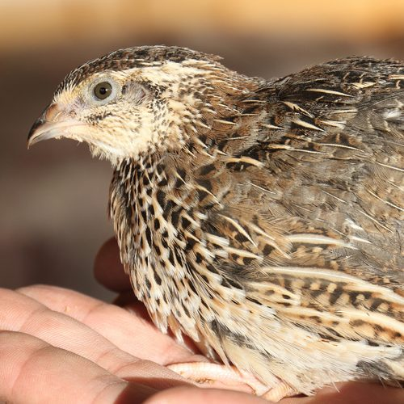
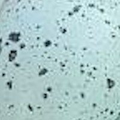
Clementine
Warm brown feathers mottled with dark barring and a cream eyebrow stripe — classic wild-type coloring. Clementine is the calm, curious one who's always first to peek out of the coop in the morning. She lays blue eggs with fine brown speckles.
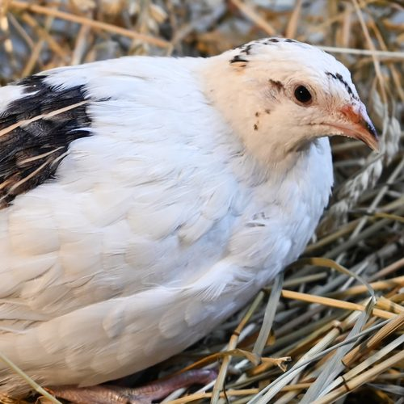
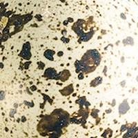
Biscuit
Crisp white feathers with a bold black-and-brown speckled patch across one wing, like she never quite finished putting her tuxedo jacket on. Biscuit is feisty and food-motivated — she'll forage circles around the rest of the flock. She lays tan eggs with dark speckles.
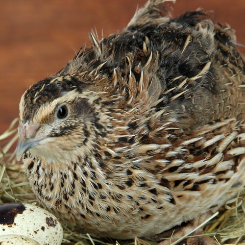
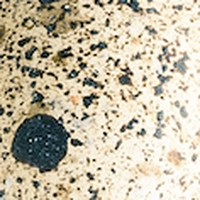
Juniper
Warm chestnut-brown plumage with fine dark mottling, usually found tucked calmly in the hay near her latest egg. Juniper is quiet and watchful, usually keeping a little distance while she sizes up what's going on. She lays tan eggs with dark speckles.
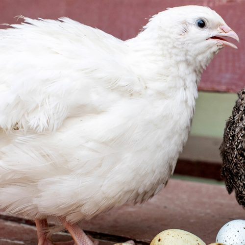
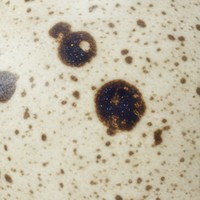
Willow
Soft, all-white feathers fluffed up like a little snowball. Willow is gentle and easygoing, happy to be picked up and held. She lays tan eggs with soft brown speckles.
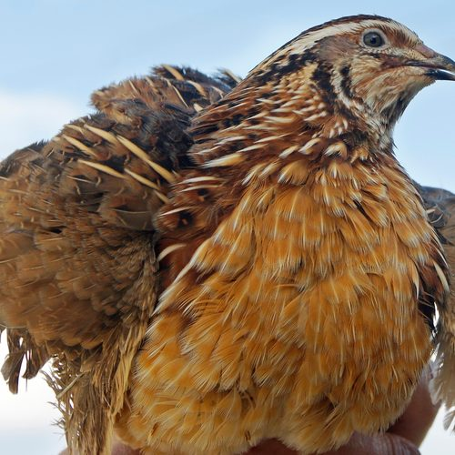
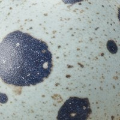
Huckleberry
Warm honey-gold plumage with a bold cream-and-black striped head, easy to spot from across the run. Huckleberry has the boldest personality of the flock and isn't afraid to let the others know it. She lays blue eggs with dark speckles.
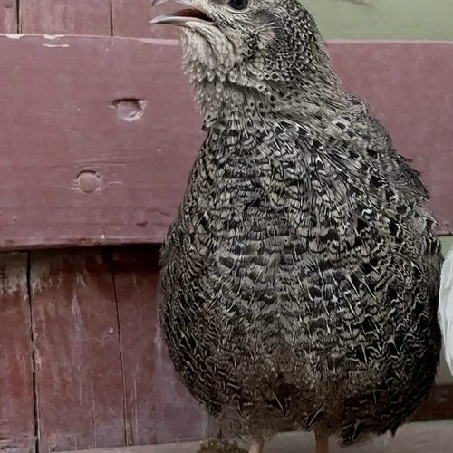
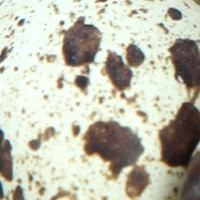
Pepper
Finely speckled slate-grey plumage from head to tail. Pepper is the chattiest hen we have — you'll hear her before you see her (caught here mid-announcement). She lays tan eggs with dark speckles.
The color of the bird does not predict the color of the egg! Most Coturnix quail eggs are brown and cream colored. Blue eggs are caused by a recessive gene called the celadon gene. Any color hen can have this gene!